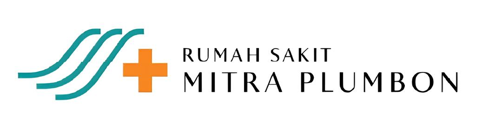

Peta Navigasi Internal
Instalasi Radiologi ⇄ Ruang MRI
Rumah Sakit Mitra Plumbon — pemandu arah suara untuk Sahabat MP
👆 Geser peta dengan jari, cubit untuk zoom
−
+
📍
KORIDOR
KORIDOR
KORIDOR
KORIDOR
Ruang Laboratorium
Ruang Panoramic
☢
Toilet Petugas
Toilet Pasien
Ruang Radiologi 2
☢
Ruang
Radiologi 1
☢
Ruang
CT Scan
☢
Ruang USG
Toa Baja Caffe
Ruang MRI
Zona 1 MRI
Ruang Operator MRI
Zona 3
MRI
RUANG IGD
RUANG IGD
LIFT
IGD
RUANG
POLI
Ruang Poli
Ruang Poli
Ruang Poli
Ruang Poli
Ruang Poli
Ruang Poli
U
S
B
T